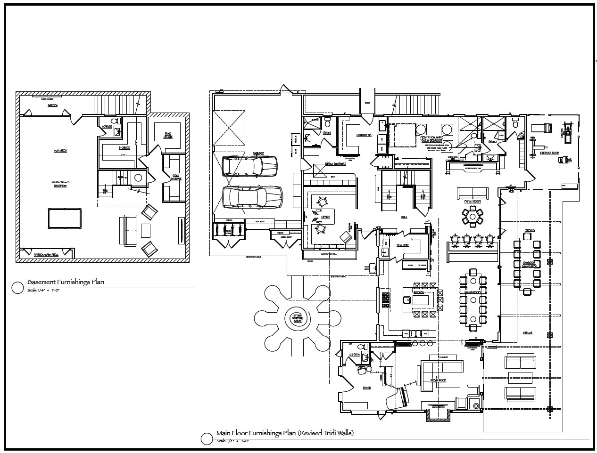
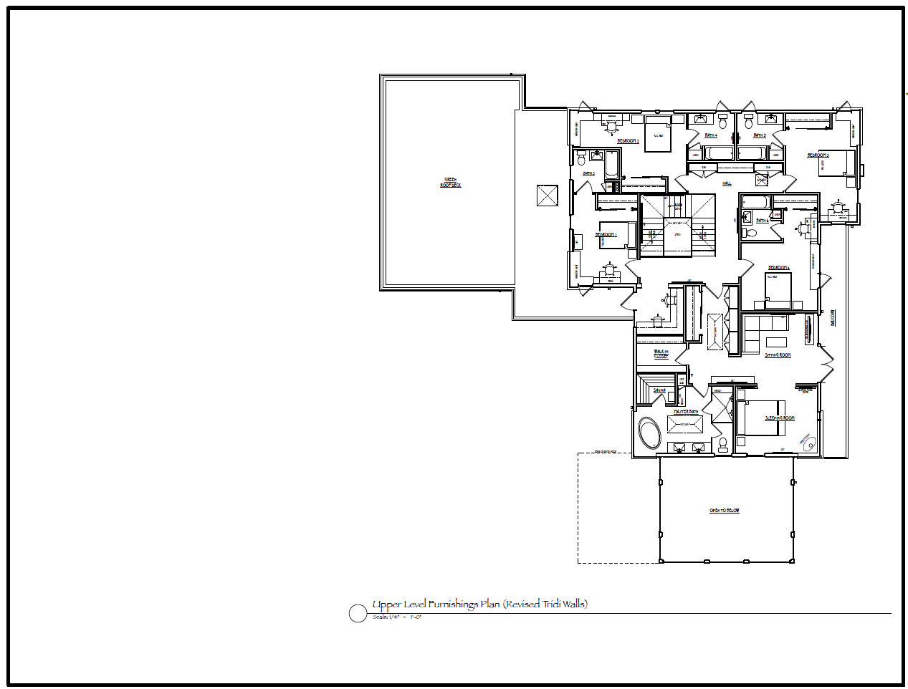
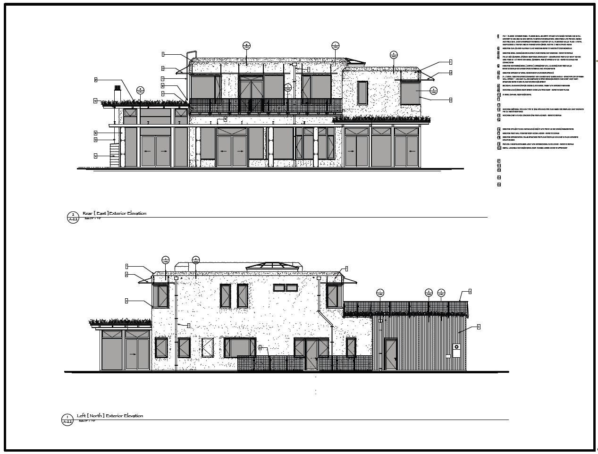
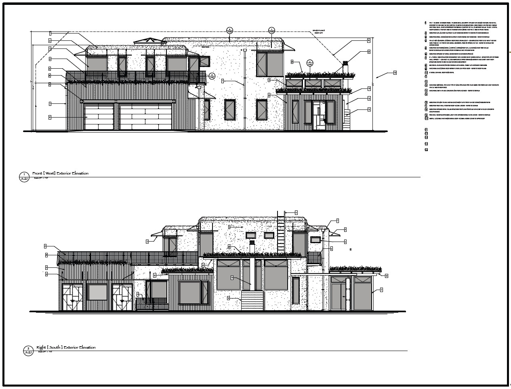

northern california permaculture estate - architecture – permaculture design – project management
workshop for living
This project in Northern California is a very remarkable permaculture estate, and home as a workshop for living. At every level this home invites creativity, healthy lifestyles, family unity, and community contribution.
The home is a Tridi Panel and post tension concrete home. The outer expression of the home is an assembly of interpenetrated cubes of earth, steel and glass. Salvaged wood and steel, concrete and earth will be the interior expression of a loft-like artist atelier. We will be integrating the latest green technologies at every level.



